Source & review coverageمنبع و پوشش مرور
Analysis of the supplied 19-page manuscript, including its methods, reported experiments, limitations, appendices, 6 numbered figure views and 20 table records. Captions below are bilingual summaries; original complete captions, tables, and pages remain available. Only explicitly printed values are transcribed. Publication status, external code, datasets and API claims have not been independently authenticated or executed. Prices, model names and versions are historical statements of this source, not current service guidance.تحلیل نسخه 19 صفحهای ارائهشده، شامل روش، آزمایشهای گزارششده، محدودیتها، پیوستها، 6 نمای شکل شمارهدار و 20 رکورد جدول. عنوانها خلاصه دوزبانهاند؛ عنوان کامل، جدول و صفحات اصلی در دسترساند. فقط مقادیر چاپشده نقل میشوند. وضعیت انتشار، کد بیرونی، داده و ادعای API مستقلاً تأیید یا اجرا نشدهاند. قیمت، نام و نسخه مدل، گزارش تاریخی همین منبع است و راهنمای سرویس فعلی نیست.
Identity, research question & tested claimsمشخصات، پرسش و ادعاهای آزموده
Tiantong Wu and Wei Yang Bryan Lim, Nanyang Technological University; supplied arXiv:2609.26532v1, 22 September 2026. The paper asks when a typed decision model can handle bounded control while a strong LLM handles uncertainty and generation. It tests a twelve-claim register rather than presenting all positive claims as confirmed.Tiantong Wu و Wei Yang Bryan Lim، دانشگاه NTU؛ نسخه ارائهشده arXiv: 2609.26532v1 مورخ ۲۲ سپتامبر ۲۰۲۶. پرسش این است که چه زمانی مدل تصمیم نوعدار کنترل محدود و LLM قوی عدمقطعیت و تولید را انجام دهد. دفتر ۱۲ ادعایی آزموده شده و همه ادعای مثبت تأییدشده نیست. Source · PDF p. 1Source · PDF p. 2Source · PDF p. 19
Four claims are retired: cardinality×ambiguity interaction, a general deferral-failure tendency, superiority to cheap self-escalation on τ²-bench, and a benefit from hierarchical routing at large action sets. Corrected hierarchical routing improves over its broken implementation, not over corrected flat routing.چهار ادعا کنار گذاشتهاند: تعامل تعداد×ابهام، گرایش عمومی خطا به تعویق، برتری بر ارجاع خودکار ارزان در τ²-bench و مزیت ارجاع سلسلهمراتبی با گزینه زیاد. اصلاح پیادهسازی سلسلهمراتبی نسبت به نسخه خراب بهتر است، نه نسبت به ارجاع تخت اصلاحشده. Source · PDF p. 11Source · PDF p. 16Source · PDF p. 17Source · PDF p. 19
Selective-control mechanism & implementation contractسازوکار کنترل انتخابی و قرارداد اجرا
At step t, Jev reads observable state and a typed action set, returning a choice and confidence. Execute directly only when c≥τ and executable; otherwise use the strong LLM. Bounded control, argument synthesis and free generation are separate. In external tasks a cheap generative executor supplies arguments/text, because Jev cannot generate them.در گام t، Jev حالت مشاهدهپذیر و مجموعه اقدام نوعدار را میخواند و انتخاب و اطمینان میدهد. فقط اگر c≥τ و قابل اجرا باشد مستقیم اجرا میکند، وگرنه LLM قوی. کنترل محدود، ساخت آرگومان و تولید آزاد جدا هستند؛ در وظیفه بیرونی مولد ارزان آرگومان/متن میسازد چون Jev تولید نمیکند. Source · PDF p. 2Source · PDF p. 3
Pinned jev-1.13.0 is paired with Qwen3.8-Flash/Max and then Kimi K3 or DeepSeek-V4-Pro fallbacks. The frozen REFLEX-Sim v1.2.0 test has 100 tasks with terminal-state and policy assertions; all final main runs report zero harness errors. It compares strong-only B0, cheap-only B1, cheap self-escalation B3 and REFLEX R1 over τ=.5,.7,.8,.9,.95, with .5 as the primary point.نسخه jev-1.13.0 با Qwen3.8-Flash/Max و سپس Kimi K3 یا DeepSeek-V4-Pro جفت میشود. آزمون ثابت REFLEX-Sim v1.2.0 شامل ۱۰۰ وظیفه با بررسی حالت نهایی و سیاست است؛ اجرای نهایی خطای عامل صفر گزارش میکند. B0 قوی، B1 ارزان، B3 خودارجاع ارزان و R1 در آستانههای ۰٫۵/۰٫۷/۰٫۸/۰٫۹/۰٫۹۵ مقایسه میشوند؛ ۰٫۵ نقطه اصلی است. Source · PDF p. 3Source · PDF p. 4
Interventions, external validation & uncertaintyمداخله، اعتبارسنجی بیرونی و عدمقطعیت
RF-5C crosses K=10/25/50 with four procedural ambiguity levels over 60 families and two realizations per cell: 1,440 decisions. A separate 240-decision matched intervention swaps a near-valid read competitor for an irreversible write while fixing other factors. Procedural distance is based on required state/policy changes, not embedding similarity. Paired family bootstrap preserves all variants of a family.RF-5C تعداد K=۱۰/۲۵/۵۰ را با چهار سطح ابهام روی ۶۰ خانواده و دو بازنویسی هر سلول ترکیب میکند: ۱۴۴۰ تصمیم. مداخله جفتی ۲۴۰ تصمیمی رقیب خواندنی نزدیک را با نوشتن برگشتناپذیر عوض و عوامل دیگر را ثابت میکند. فاصله روی تغییر لازم حالت/سیاست تعریف میشود، نه شباهت برداری. بازنمونهگیری خانواده همه نسخهها را کنار هم نگه میدارد. Source · PDF p. 4Source · PDF p. 6Source · PDF p. 12Source · PDF p. 13Source · PDF p. 17
BFCL tests 1,800 function choices and 100 function-relevance cases. External τ²-bench v1.0.1 validation uses 60 matched tasks×5 arms=300 episodes across three domains, native terminal reward and a separate control/argument failure audit. Main intervals use 10,000 task/family resamples; McNemar tests paired episode outcomes. External validation is not a full repeated leaderboard evaluation.BFCL دارای ۱۸۰۰ انتخاب تابع و ۱۰۰ مورد ارتباط تابع است. اعتبارسنجی بیرونی τ²-bench v1.0.1 از ۶۰ وظیفه×۵ روش=۳۰۰ اپیزود درسهدامنه با پاداش بومی و ممیزی جدا خطای کنترل/آرگومان استفاده میکند. بازه اصلی با ۱۰۰۰۰ بازنمونه و آزمون McNemar برای پیامد جفتی است. اعتبارسنجی بیرونی ارزیابی کامل تکراری جدول رتبهبندی نیست. Source · PDF p. 4Source · PDF p. 5Source · PDF p. 7Source · PDF p. 10Source · PDF p. 12Source · PDF p. 15
Results, non-inferiority & reproducibility caveatsنتیجه، عدمافت و محدودیت بازتولید
At τ=.5, main-run success is 95% versus 88% for B0, with 1.12 versus 4.10 strong calls/task (72.7% reduction). Paired outcomes are 87 both succeed,8 R1-only,1 B0-only,4 both fail; exact McNemar p=.0391. Cost/task is $.00763 versus $.01508 and cost/success $.00803 versus $.01713. These are dated source measurements.در آستانه ۰٫۵ موفقیت اجرای اصلی ۹۵٪ در برابر ۸۸٪ و فراخوانی قوی/وظیفه ۱٫۱۲ در برابر ۴٫۱۰ است (کاهش ۷۲٫۷٪). پیامد جفتی ۸۷ موفقیت مشترک، ۸ فقط R1، ۱ فقط B0 و ۴ شکست مشترک؛ p=۰٫۰۳۹۱. هزینه وظیفه ۰٫۰۰۷۶۳ در برابر ۰٫۰۱۵۰۸ و هزینه موفقیت ۰٫۰۰۸۰۳ در برابر ۰٫۰۱۷۱۳ دلار است؛ اندازهگیری تاریخی منبع است. Source · PDF p. 5Source · PDF p. 16Source · PDF p. 17Source · PDF p. 18
Across fallback families, strong-call reduction is66.1–71.9%. The original criterion checks the observed success difference against−.02; formal lower-bound non-inferiority passes Qwen/DeepSeek but not Kimi. The same 66 autonomous tasks are shared across families, not three independent sets. Repeated Qwen B0 runs differ by three success points despite temperature zero.کاهش فراخوانی در خانوادهها ۶۶٫۱–۷۱٫۹٪ است. معیار اولیه فقط اختلاف مشاهدهشده را با ۰٫۰۲− مقایسه میکند؛ عدمافت بر پایه کران پایین برای Qwen/DeepSeek پذیرفته و برای Kimi ثابت نمیشود. همان ۶۶ وظیفه خودکار بین خانوادهها مشترکاند، نه سهمجموعه مستقل. تکرار B0 مربوط به Qwen با دمای صفر سهواحددرصد اختلاف دارد. Source · PDF p. 8Source · PDF p. 9Source · PDF p. 15Source · PDF p. 16Source · PDF p. 18
Author-stated limits, negative evidence & future workمحدودیت، شاهد منفی و آینده از دید نویسندگان
BFCL is98.4% for which function but52.0% for whether any function applies. On τ², REFLEX costs $.0572 versus B0 $.2111 but succeeds85% versus 90%, with the paired difference unresolved. B3 costs $.0411 with 91.7% success; superiority to it is not established. The failure audit finds no control/argument failures in any arm, limiting what this benchmark can show about a routing improvement.BFCL در انتخاب کدام تابع ۹۸٫۴٪ و در اینکه آیا تابعی لازم است ۵۲٪ دارد. درτ² هزینه REFLEX برابر ۰٫۰۵۷۲ در برابر B0 برابر ۰٫۲۱۱۱ دلار ولی موفقیت ۸۵٪ در برابر ۹۰٪ با اختلاف نامشخص است. B3 با ۰٫۰۴۱۱ دلار و ۹۱٫۷٪موفقیت است؛ برتری برآن ثابت نیست. ممیزی هیچ خطای کنترل/آرگومان درهیچ روش ندارد و توان سنجش مزیت روتر را محدود میکند. Source · PDF p. 6Source · PDF p. 7Source · PDF p. 15Source · PDF p. 18
Limits: one proprietary decision model, ceiling effects, authority-sensitive error concentration, a limited external sample, imperfect native reward and dated prices. Suggested future benchmarks annotate why an action is valid, including evidence, permission and reversibility. Zero unsafe events in these runs is empirical absence, not an assurance of zero deployment risk.محدودیت: یک مدل تصمیم اختصاصی، اثرسقف، تمرکز خطا در تصمیم اختیار، نمونه بیرونی محدود، پاداش بومی ناقص و قیمت تاریخی. معیار آینده باید دلیل اعتبار اقدام شامل شاهد، اختیار و برگشتپذیری را ثبت کند. نبود رخداد ناایمن در این اجراها تضمین ریسک صفر استقرار نیست. Source · PDF p. 10Source · PDF p. 11Source · PDF p. 12
Key reported resultsنتایج کلیدی گزارششده
Main run:95% success with 72.7% fewer strong calls; externalτ²:85% versus 90% with 3.7× lower per-episode cost and unresolved success difference. Formal cross-family NI is not established for Kimi.اجرای اصلی: ۹۵٪موفقیت با ۷۲٫۷٪فراخوانی قوی کمتر؛ τ² بیرونی: ۸۵٪در برابر ۹۰٪ با هزینه اپیزود ۳٫۷ برابر کمتر و اختلاف موفقیت نامشخص. عدمافت رسمی Kimi ثابت نیست. Source · PDF p. 5Source · PDF p. 7Source · PDF p. 18
Figures, captions & extracted evidenceشکلها، عنوانها و شواهد استخراجشده
Figure 1
Mechanism & workflowسازوکار و گردش کار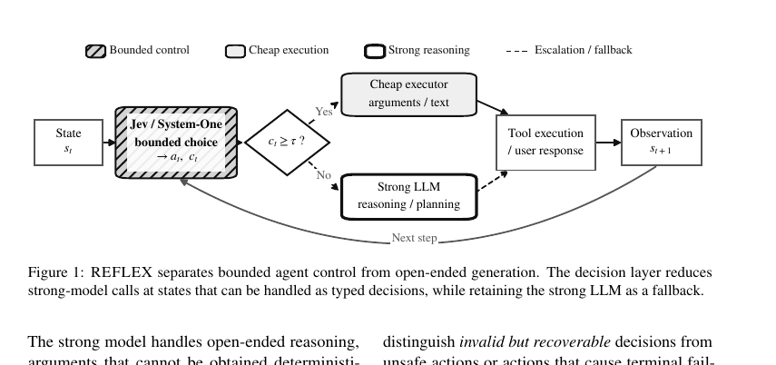
How to read this figureراهنمای خواندن شکل
Trace the inputs, processing stages and outputs, then look for feedback or validation paths. Use the accompanying explanation to distinguish the proposed design from components actually tested in the paper.ورودی، مرحله پردازش و خروجی را دنبال و مسیر بازخورد یا اعتبارسنجی را پیدا کنید. با توضیح همراه، طراحی پیشنهادی را از مؤلفه واقعاً آزمودهشده جدا کنید.
Reader guidance · not an additional author claimراهنمای مطالعه · ادعای اضافی نویسنده نیستWhat this figure showsاین شکل چه نشان میدهد؟
Follow the confidence gate, executor and observation loop. The decision model chooses, while generation/argument synthesis may still require another model.دروازه اطمینان، اجراگر و حلقه مشاهده را دنبال کنید. مدل تصمیم انتخاب میکند، ولی تولید/آرگومان هنوز میتواند به مدل دیگر نیاز داشته باشد.
Reported values & evidence limitsمقادیر گزارششده و حدود شواهد
Architectural diagram; confidence threshold alone does not enforce operation safety.نمودار معماری است؛ آستانه اطمینان به تنهایی ایمنی عملیات را اعمال نمیکند.
Figure 2
Source visualتصویر منبع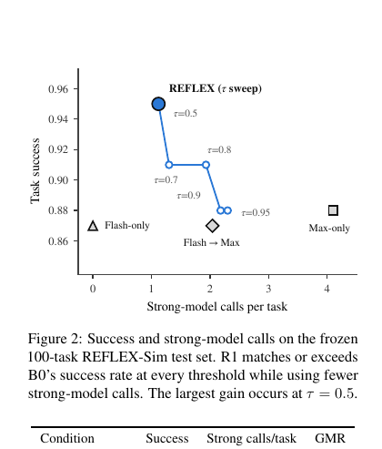
How to read this figureراهنمای خواندن شکل
Read the original labels and caption first, then use the explanation and evidence note below. Printed quantities are preserved separately from reviewer interpretation.ابتدا برچسبها و عنوان اصلی را بخوانید و سپس توضیح و یادداشت شاهد را بررسی کنید. مقدار چاپشده از تفسیر مرورگر جدا نگه داشته شده است.
Reader guidance · not an additional author claimراهنمای مطالعه · ادعای اضافی نویسنده نیستWhat this figure showsاین شکل چه نشان میدهد؟
Every point is a separately executed threshold run on the frozen100 tasks. Higher confidence thresholds need not increase total task success because fallback behavior also matters.هرنقطه اجرای مستقل آستانه روی ۱۰۰ وظیفه ثابت است. آستانه بالاتر لزوماً موفقیت نهایی را بالا نمیبرد زیرا رفتار بازگشت نیز مؤثر است.
Reported values & evidence limitsمقادیر گزارششده و حدود شواهد
τ=.5:95%,1.12 calls/task; B0:88%,4.10;τ=.95:88%,2.30 (Table1).آستانه ۰٫۵: ۹۵٪ و ۱٫۱۲ فراخوانی؛ B0: ۸۸٪ و ۴٫۱۰؛ آستانه ۰٫۹۵: ۸۸٪ و ۲٫۳۰ (جدول ۱).
Figure 3
Source visualتصویر منبع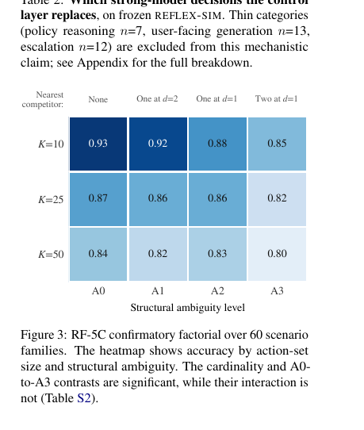
How to read this figureراهنمای خواندن شکل
Read the original labels and caption first, then use the explanation and evidence note below. Printed quantities are preserved separately from reviewer interpretation.ابتدا برچسبها و عنوان اصلی را بخوانید و سپس توضیح و یادداشت شاهد را بررسی کنید. مقدار چاپشده از تفسیر مرورگر جدا نگه داشته شده است.
Reader guidance · not an additional author claimراهنمای مطالعه · ادعای اضافی نویسنده نیستWhat this figure showsاین شکل چه نشان میدهد؟
Rows varyK; columns vary the number/distance of near-valid competitors. The aggregate marginal effects are significant, their interaction is not. Effects concentrate in risk and clarification tasks.ردیف K و ستون تعداد/فاصله رقیب نزدیک معتبر را تغییر میدهد. اثرحاشیهای معنادار ولی تعامل نامعنادار است و اثر در وظیفه ریسک و رفع ابهام متمرکز است.
Reported values & evidence limitsمقادیر گزارششده و حدود شواهد
K10→50:−6.7 points; A0→A3:−5.6; interaction+3.3 with CI crossing zero. Printed cells range .80–.93.K از ۱۰ به ۵۰: ۶٫۷−واحد؛ A0 به A3: ۵٫۶−؛ تعامل ۳٫۳+ با بازه شامل صفر. سلول چاپشده ۰٫۸۰–۰٫۹۳ است.
Figure 4
Comparison & resultsمقایسه و نتایج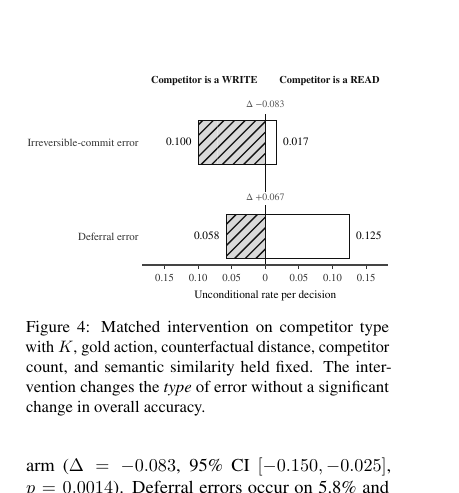
How to read this figureراهنمای خواندن شکل
Check the axes, units, panel labels and the caption’s definition of better performance. Compare methods under the stated conditions; keep uncertainty, tradeoffs and normalization separate from headline gains.محور، واحد، پنل و تعریف عملکرد بهتر در عنوان را بررسی کنید. روشها را در شرایط بیانشده مقایسه و عدمقطعیت، مصالحه و نرمالسازی را از بهبود شاخص اصلی جدا نگه دارید.
Reader guidance · not an additional author claimراهنمای مطالعه · ادعای اضافی نویسنده نیستWhat this figure showsاین شکل چه نشان میدهد؟
The intervention shifts the type of error while holding the correct action and other factors fixed. Rates are unconditional per decision, not conditional on being wrong.مداخله با ثابتبودن اقدام درست و عوامل دیگر نوع خطا را تغییر میدهد. نرخها برای همه تصمیمهاست، نه مشروط به اشتباه.
Reported values & evidence limitsمقادیر گزارششده و حدود شواهد
Irreversible error write/read .100/.017; deferral .058/.125; overall accuracy .833/.842 with unresolved difference.خطای برگشتناپذیر نوشتن/خواندن ۰٫۱۰۰/۰٫۰۱۷؛ تعویق ۰٫۰۵۸/۰٫۱۲۵؛ دقت کل ۰٫۸۳۳/۰٫۸۴۲ با اختلاف نامشخص.
Figure 5
Source visualتصویر منبع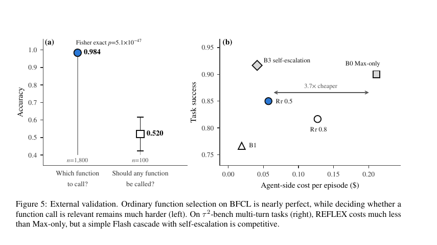
How to read this figureراهنمای خواندن شکل
Read the original labels and caption first, then use the explanation and evidence note below. Printed quantities are preserved separately from reviewer interpretation.ابتدا برچسبها و عنوان اصلی را بخوانید و سپس توضیح و یادداشت شاهد را بررسی کنید. مقدار چاپشده از تفسیر مرورگر جدا نگه داشته شده است.
Reader guidance · not an additional author claimراهنمای مطالعه · ادعای اضافی نویسنده نیستWhat this figure showsاین شکل چه نشان میدهد؟
Left separates which tool from whether a tool should run; right showsτ² cost/success. The cheap generative cascade remains a necessary competitor.چپ کدام ابزار را از لزوم اجرای ابزار جدا میکند؛ راست هزینه/موفقیتτ² است. آبشار مولد ارزان همچنان رقیب ضروری است.
Reported values & evidence limitsمقادیر گزارششده و حدود شواهد
BFCL .984(n1800) versus .520(n100);τ² REFLEX .850,$.0572; B0 .900,$.2111; B3 .917,$.0411.BFCL برابر ۰٫۹۸۴(n ۱۸۰۰) و ۰٫۵۲۰(n ۱۰۰)؛ τ² برای REFLEX: ۰٫۸۵۰، ۰٫۰۵۷۲ دلار؛ B0: ۰٫۹۰۰، ۰٫۲۱۱۱؛ B3: ۰٫۹۱۷، ۰٫۰۴۱۱.
Figure 6
Source visualتصویر منبع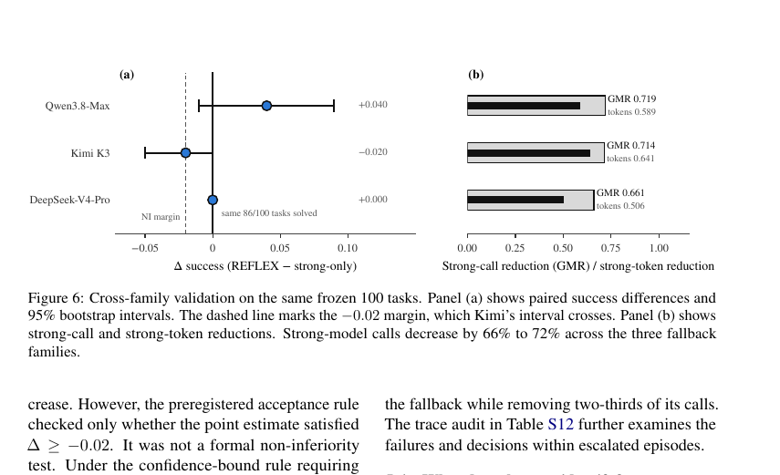
How to read this figureراهنمای خواندن شکل
Read the original labels and caption first, then use the explanation and evidence note below. Printed quantities are preserved separately from reviewer interpretation.ابتدا برچسبها و عنوان اصلی را بخوانید و سپس توضیح و یادداشت شاهد را بررسی کنید. مقدار چاپشده از تفسیر مرورگر جدا نگه داشته شده است.
Reader guidance · not an additional author claimراهنمای مطالعه · ادعای اضافی نویسنده نیستWhat this figure showsاین شکل چه نشان میدهد؟
The dashed margin is−.02. Kimi’s interval crosses it, so absence of a significant loss is not sufficient for formal non-inferiority. Call and token reductions have different denominators.حاشیه خطچین ۰٫۰۲− است؛ بازه Kimi آن را قطع میکند، پس نبود افت معنادار برای عدمافت رسمی کافی نیست. مخرج کاهش فراخوانی و توکن متفاوت است.
Reported values & evidence limitsمقادیر گزارششده و حدود شواهد
Success differences Qwen+.040, Kimi−.020, DeepSeek0; call reductions .719/.714/.661; token reductions .589/.641/.506.اختلاف موفقیت Qwen: ۰٫۰۴۰+، Kimi: ۰٫۰۲۰−، DeepSeek: ۰؛ کاهش فراخوانی ۰٫۷۱۹/۰٫۷۱۴/۰٫۶۶۱ و توکن ۰٫۵۸۹/۰٫۶۴۱/۰٫۵۰۶.
Tables & numerical evidenceجدولها و شواهد عددی
Table 1 · Frozen success and strong-call frontierمرز ثابت موفقیت و فراخوانی
Original table and all printed entries are retained in the source view. Read its caption, units, sample size and footnotes together; values are not estimated from plots.جدول اصلی و تمام مقادیر چاپشده در نمای منبع حفظ شدهاند. عنوان، واحد، اندازه نمونه و پانوشت را با هم بخوانید؛ مقداری از نمودار تخمین زده نشده است.
Table 1 · PDF p. 5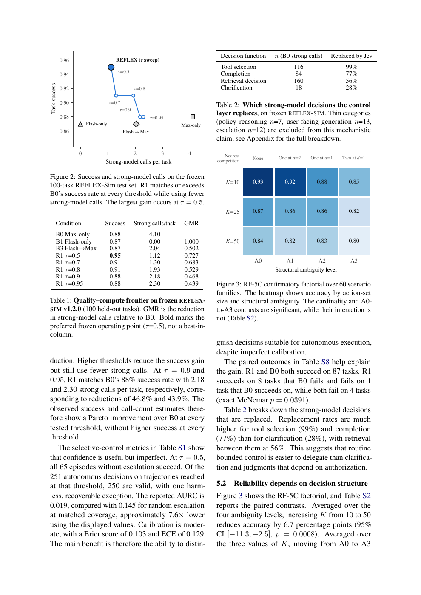
Table 2 · Replaced decision functionsکارکرد تصمیم جایگزینشده
Original table and all printed entries are retained in the source view. Read its caption, units, sample size and footnotes together; values are not estimated from plots.جدول اصلی و تمام مقادیر چاپشده در نمای منبع حفظ شدهاند. عنوان، واحد، اندازه نمونه و پانوشت را با هم بخوانید؛ مقداری از نمودار تخمین زده نشده است.
Table 2 · PDF p. 5Table 3 · 300-episode external validationاعتبارسنجی بیرونی ۳۰۰ اپیزودی
Original table and all printed entries are retained in the source view. Read its caption, units, sample size and footnotes together; values are not estimated from plots.جدول اصلی و تمام مقادیر چاپشده در نمای منبع حفظ شدهاند. عنوان، واحد، اندازه نمونه و پانوشت را با هم بخوانید؛ مقداری از نمودار تخمین زده نشده است.
Table 3 · PDF p. 7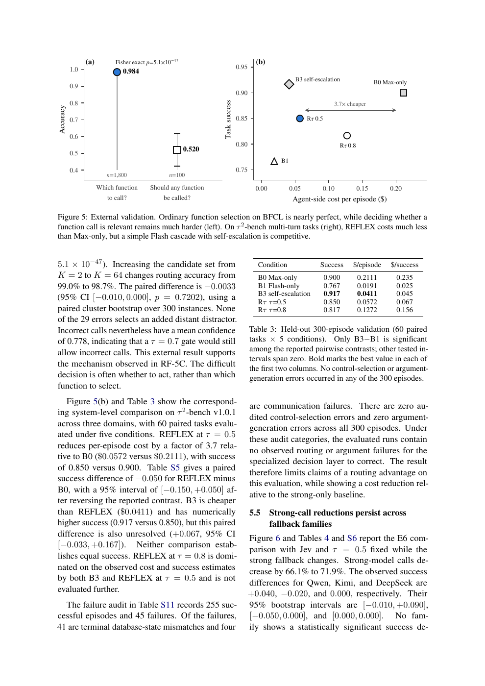
Table 4 · Cross-family success and call reductionموفقیت و کاهش فراخوانی هرخانواده
Original table and all printed entries are retained in the source view. Read its caption, units, sample size and footnotes together; values are not estimated from plots.جدول اصلی و تمام مقادیر چاپشده در نمای منبع حفظ شدهاند. عنوان، واحد، اندازه نمونه و پانوشت را با هم بخوانید؛ مقداری از نمودار تخمین زده نشده است.
Table 4 · PDF p. 9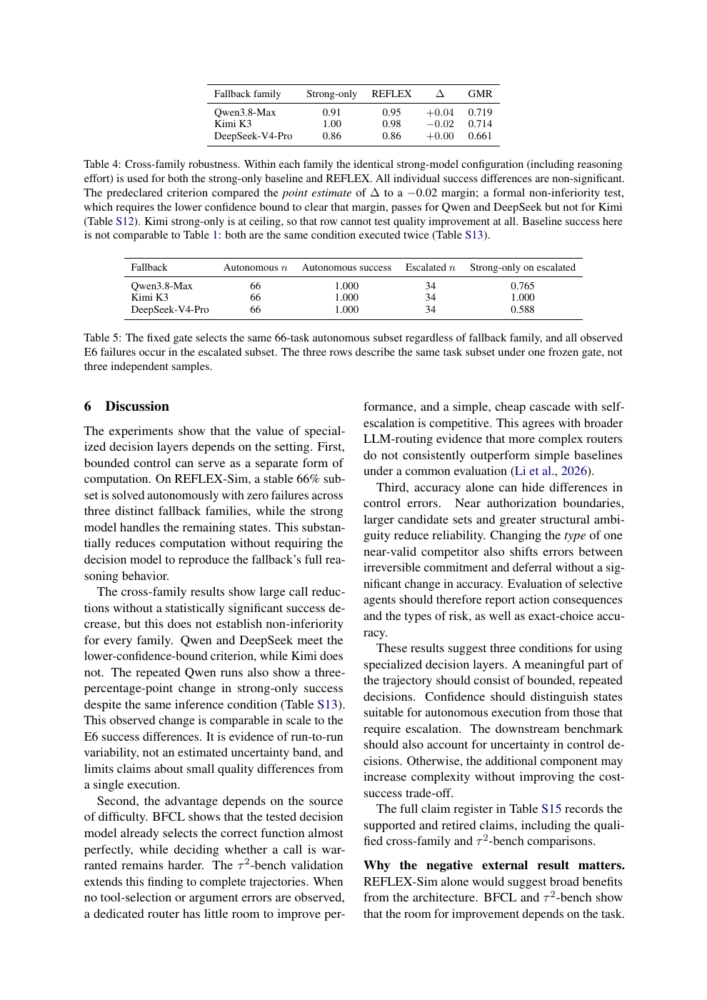
Table 5 · Shared autonomous task subsetزیرمجموعه خودکار مشترک
Original table and all printed entries are retained in the source view. Read its caption, units, sample size and footnotes together; values are not estimated from plots.جدول اصلی و تمام مقادیر چاپشده در نمای منبع حفظ شدهاند. عنوان، واحد، اندازه نمونه و پانوشت را با هم بخوانید؛ مقداری از نمودار تخمین زده نشده است.
Table 5 · PDF p. 9Table S1 · Selective risk/coverage by thresholdریسک/پوشش هرآستانه
Original table and all printed entries are retained in the source view. Read its caption, units, sample size and footnotes together; values are not estimated from plots.جدول اصلی و تمام مقادیر چاپشده در نمای منبع حفظ شدهاند. عنوان، واحد، اندازه نمونه و پانوشت را با هم بخوانید؛ مقداری از نمودار تخمین زده نشده است.
Table S1 · PDF p. 13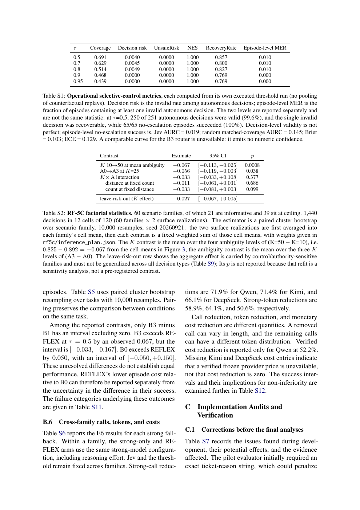
Table S2 · Factorial contrasts and sensitivityمقایسه عاملی و حساسیت
Original table and all printed entries are retained in the source view. Read its caption, units, sample size and footnotes together; values are not estimated from plots.جدول اصلی و تمام مقادیر چاپشده در نمای منبع حفظ شدهاند. عنوان، واحد، اندازه نمونه و پانوشت را با هم بخوانید؛ مقداری از نمودار تخمین زده نشده است.
Table S2 · PDF p. 13Table S3 · Matched competitor-type contrastsمقایسه نوع رقیب جفتی
Original table and all printed entries are retained in the source view. Read its caption, units, sample size and footnotes together; values are not estimated from plots.جدول اصلی و تمام مقادیر چاپشده در نمای منبع حفظ شدهاند. عنوان، واحد، اندازه نمونه و پانوشت را با هم بخوانید؛ مقداری از نمودار تخمین زده نشده است.
Table S3 · PDF p. 14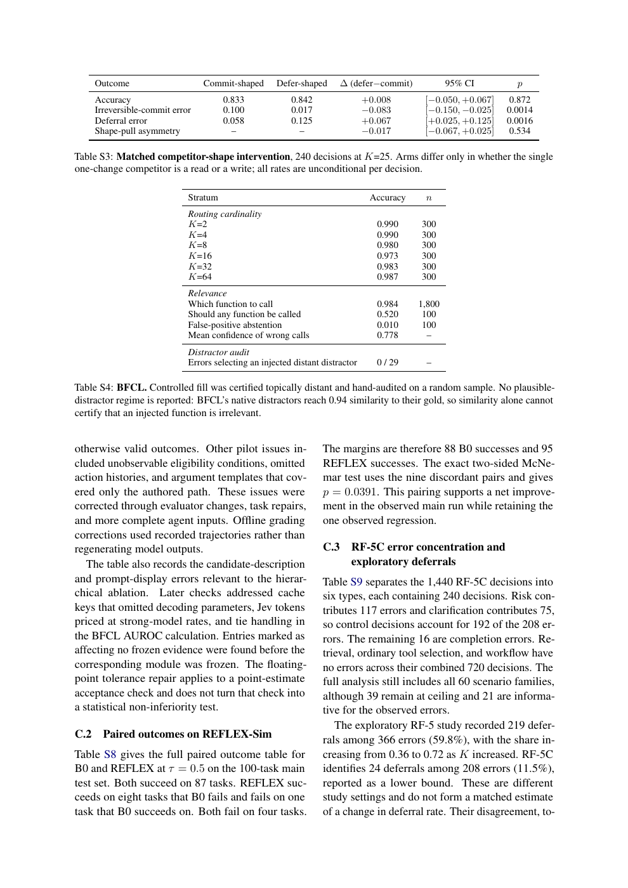
Table S4 · BFCL cardinality and relevanceتعداد گزینه و ارتباط BFCL
Original table and all printed entries are retained in the source view. Read its caption, units, sample size and footnotes together; values are not estimated from plots.جدول اصلی و تمام مقادیر چاپشده در نمای منبع حفظ شدهاند. عنوان، واحد، اندازه نمونه و پانوشت را با هم بخوانید؛ مقداری از نمودار تخمین زده نشده است.
Table S4 · PDF p. 14Table S5 · Paired external success comparisonsمقایسه جفتی موفقیت بیرونی
Original table and all printed entries are retained in the source view. Read its caption, units, sample size and footnotes together; values are not estimated from plots.جدول اصلی و تمام مقادیر چاپشده در نمای منبع حفظ شدهاند. عنوان، واحد، اندازه نمونه و پانوشت را با هم بخوانید؛ مقداری از نمودار تخمین زده نشده است.
Table S5 · PDF p. 15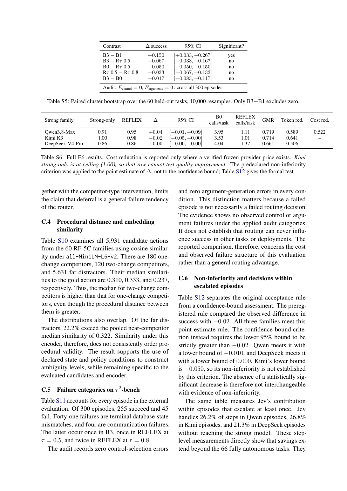
Table S6 · Full cross-family calls/tokens/costفراخوانی/توکن/هزینه کامل خانواده
Original table and all printed entries are retained in the source view. Read its caption, units, sample size and footnotes together; values are not estimated from plots.جدول اصلی و تمام مقادیر چاپشده در نمای منبع حفظ شدهاند. عنوان، واحد، اندازه نمونه و پانوشت را با هم بخوانید؛ مقداری از نمودار تخمین زده نشده است.
Table S6 · PDF p. 15Table S7 · Implementation audit and correctionsممیزی و اصلاح پیادهسازی
Original table and all printed entries are retained in the source view. Read its caption, units, sample size and footnotes together; values are not estimated from plots.جدول اصلی و تمام مقادیر چاپشده در نمای منبع حفظ شدهاند. عنوان، واحد، اندازه نمونه و پانوشت را با هم بخوانید؛ مقداری از نمودار تخمین زده نشده است.
Table S7 · PDF p. 16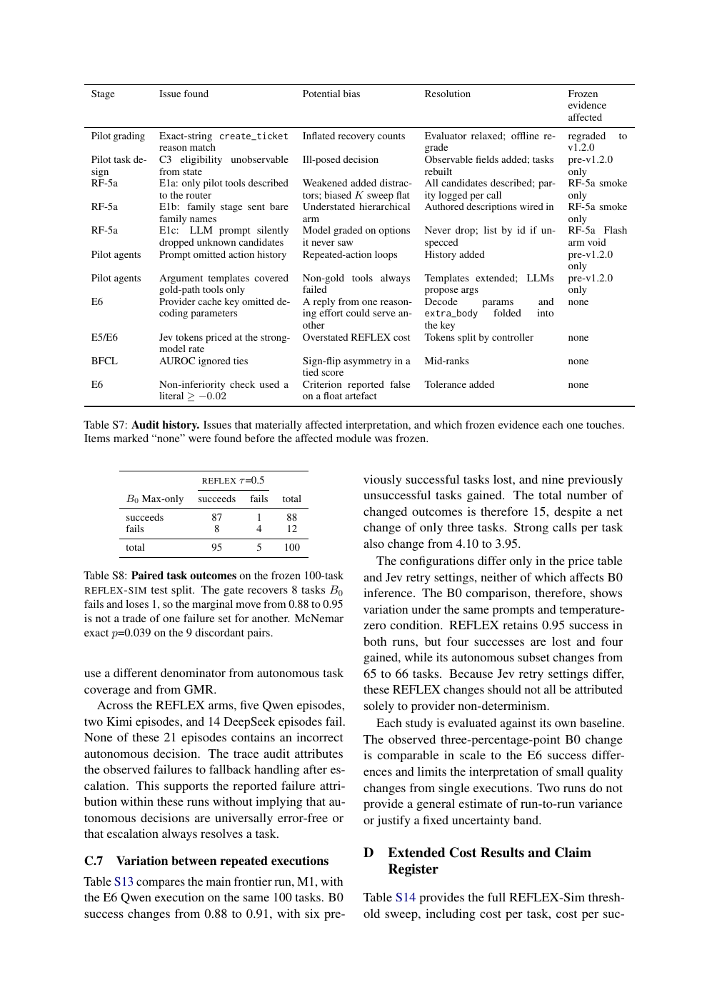
Table S8 · Paired100-task outcomesپیامد جفتی ۱۰۰ وظیفه
Original table and all printed entries are retained in the source view. Read its caption, units, sample size and footnotes together; values are not estimated from plots.جدول اصلی و تمام مقادیر چاپشده در نمای منبع حفظ شدهاند. عنوان، واحد، اندازه نمونه و پانوشت را با هم بخوانید؛ مقداری از نمودار تخمین زده نشده است.
Table S8 · PDF p. 16Table S9 · Errors by decision typeخطا به تفکیک نوع تصمیم
Original table and all printed entries are retained in the source view. Read its caption, units, sample size and footnotes together; values are not estimated from plots.جدول اصلی و تمام مقادیر چاپشده در نمای منبع حفظ شدهاند. عنوان، واحد، اندازه نمونه و پانوشت را با هم بخوانید؛ مقداری از نمودار تخمین زده نشده است.
Table S9 · PDF p. 17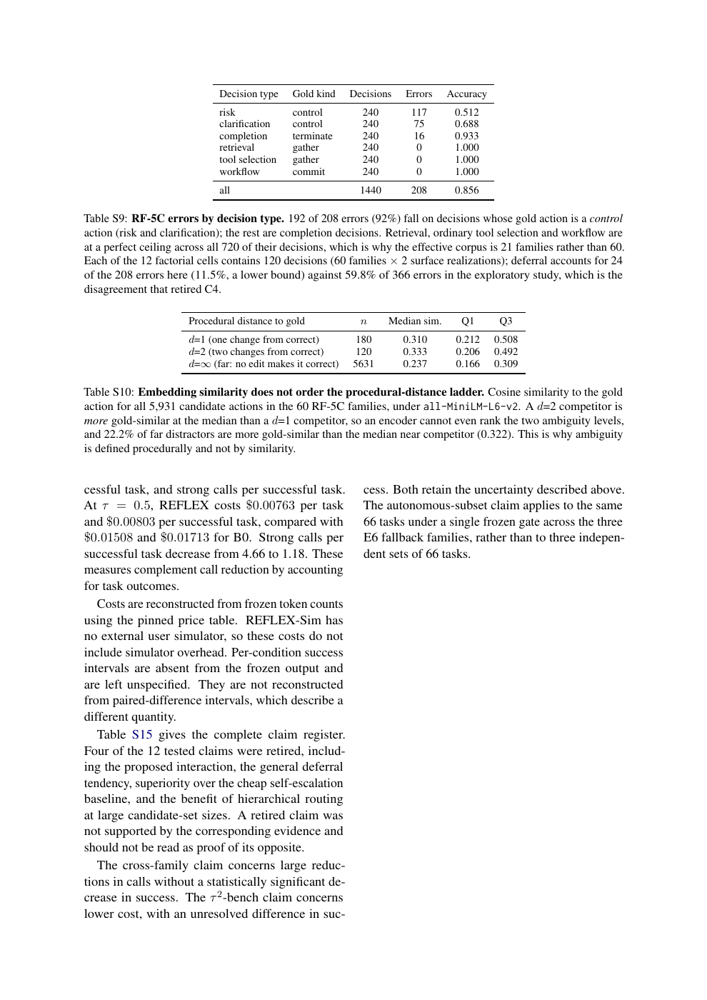
Table S10 · Embedding versus procedural distanceفاصله برداری در برابر رویهای
Original table and all printed entries are retained in the source view. Read its caption, units, sample size and footnotes together; values are not estimated from plots.جدول اصلی و تمام مقادیر چاپشده در نمای منبع حفظ شدهاند. عنوان، واحد، اندازه نمونه و پانوشت را با هم بخوانید؛ مقداری از نمودار تخمین زده نشده است.
Table S10 · PDF p. 17Table S11 · Every external episode failureشکست همه اپیزودهای بیرونی
Original table and all printed entries are retained in the source view. Read its caption, units, sample size and footnotes together; values are not estimated from plots.جدول اصلی و تمام مقادیر چاپشده در نمای منبع حفظ شدهاند. عنوان، واحد، اندازه نمونه و پانوشت را با هم بخوانید؛ مقداری از نمودار تخمین زده نشده است.
Table S11 · PDF p. 18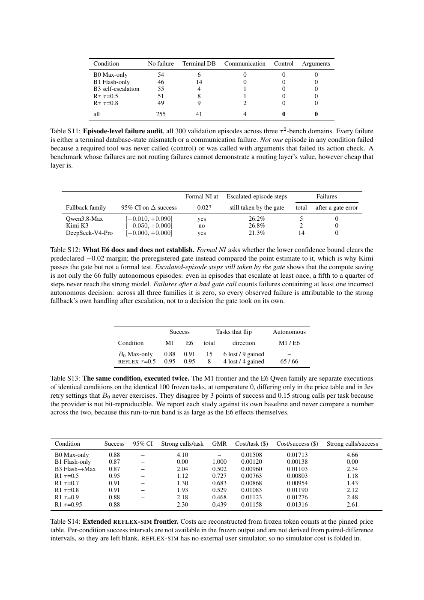
Table S12 · Formal non-inferiority and escalationعدمافت رسمی و ارجاع
Original table and all printed entries are retained in the source view. Read its caption, units, sample size and footnotes together; values are not estimated from plots.جدول اصلی و تمام مقادیر چاپشده در نمای منبع حفظ شدهاند. عنوان، واحد، اندازه نمونه و پانوشت را با هم بخوانید؛ مقداری از نمودار تخمین زده نشده است.
Table S12 · PDF p. 18Table S13 · Repeated execution differencesاختلاف اجرای تکراری
Original table and all printed entries are retained in the source view. Read its caption, units, sample size and footnotes together; values are not estimated from plots.جدول اصلی و تمام مقادیر چاپشده در نمای منبع حفظ شدهاند. عنوان، واحد، اندازه نمونه و پانوشت را با هم بخوانید؛ مقداری از نمودار تخمین زده نشده است.
Table S13 · PDF p. 18Table S14 · Complete frontier cost accountingحسابداری هزینه کل مرز
Original table and all printed entries are retained in the source view. Read its caption, units, sample size and footnotes together; values are not estimated from plots.جدول اصلی و تمام مقادیر چاپشده در نمای منبع حفظ شدهاند. عنوان، واحد، اندازه نمونه و پانوشت را با هم بخوانید؛ مقداری از نمودار تخمین زده نشده است.
Table S14 · PDF p. 18Table S15 · Supported and retired claim registerدفتر ادعای تأییدشده و کنارگذاشته
Original table and all printed entries are retained in the source view. Read its caption, units, sample size and footnotes together; values are not estimated from plots.جدول اصلی و تمام مقادیر چاپشده در نمای منبع حفظ شدهاند. عنوان، واحد، اندازه نمونه و پانوشت را با هم بخوانید؛ مقداری از نمودار تخمین زده نشده است.
Table S15 · PDF p. 19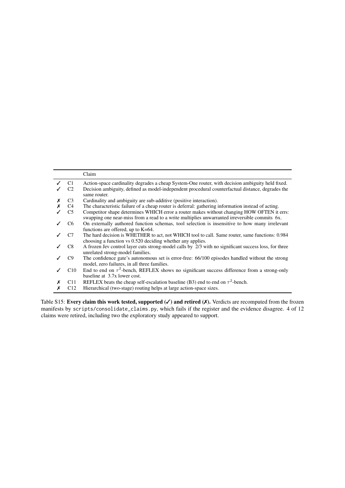
Critical analysis — reviewer assessmentتحلیل انتقادی — ارزیابی مرورگر
Strength: the paper reports failed claims and evaluator repairs rather than hiding them. Limitation: impressive main-run savings coexist with unresolved external quality and a competitive simpler cascade. Our contribution would need to improve the diagnostic/control objective, not only route familiar tools cheaply.قوت: ادعای ردشده و اصلاح ارزیاب را پنهان نمیکند. محدودیت: صرفهجویی اجرای اصلی با کیفیت بیرونی نامشخص و آبشار ساده رقابتی همراه است. مشارکت ما باید هدف تشخیص/کنترل را بهتر کند، نه فقط ابزار آشنا را ارزان ارجاع دهد. Source · PDF p. 7Source · PDF p. 10Source · PDF p. 16Source · PDF p. 19
The source’s Table S2 row text says A0→A3 atK=25, while the equation, caption and narrative define an average over all threeK values. This report follows the explicit estimator and preserves the original table for audit.متن ردیف جدول S2 میگوید A0→A3 در K=۲۵، ولی معادله، عنوان و روایت میانگین سه K را تعریف میکنند. گزارش از برآوردگر صریح پیروی و جدول اصلی را برای ممیزی حفظ میکند. Source · PDF p. 12Source · PDF p. 13
Role in our researchنقش مقاله در پژوهش ما
Why is it important to our research?چرا برای پژوهش ما مهم است؟
Directly relevant to selective low-cost orchestration and the distinction between knowing which intervention exists and being authorized to execute it. It evaluates generic tools, not energy physics or causal diagnosis.مستقیماً با هماهنگی انتخابی کمهزینه و تمایز دانستن مداخله موجود از اختیار اجرای آن مرتبط است. ابزار عمومی را میسنجد، نه فیزیک انرژی یا تشخیص علّی. Source · PDF p. 3Source · PDF p. 6Source · PDF p. 7Source · PDF p. 10
What does it contribute to our research?چه سهمی در پژوهش ما دارد؟
Supplies a bounded-control/generation split, strong-calls-per-success accounting, procedural ambiguity interventions and an explicit claim register. Its corrected non-inferiority analysis is especially useful for our reliability claims.تفکیک کنترل/تولید، حسابداری فراخوانی به ازای موفقیت، مداخله ابهام رویهای و دفتر ادعا را میدهد. تحلیل اصلاحشده عدمافت برای ادعای قابلیت اعتماد پروژه مهم است. Source · PDF p. 3Source · PDF p. 12Source · PDF p. 16Source · PDF p. 18Source · PDF p. 19
How can we employ it?چگونه از آن استفاده کنیم؟
Proposed P6/P7 use: represent allowed operations with prerequisites, authorization and reversibility, then evaluate confidence-based delegation with deterministic checks and a strong fallback. In P8, include near-valid actions, held-out thresholds and repeated paired task runs; measure complete recovery, not just call reduction.کاربرد پیشنهادی P6/P7: عملیات مجاز با پیششرط، اختیار و برگشتپذیری و سنجش واگذاری اطمینانمحور با بررسی قطعی و بازگشت قوی. در P8 اقدام نزدیک معتبر، آستانه نگهداشتهشده و اجرای جفتی تکراری و بازیابی کامل را بسنجیم، نه فقط کاهش فراخوانی. Source · PDF p. 3Source · PDF p. 4Source · PDF p. 10Source · PDF p. 18
Should we implement it as a baseline?آیا باید آن را بهعنوان خطمبنا پیاده کنیم؟
Conditional adapted component baseline if efficient decision allocation becomes part of our scope: strong-only, cheap-only, cheap self-escalation and REFLEX-style typed gating on identical HEMS states. REFLEX itself need not replace the main diagnosis/planning baselines or justify importingτ=.5 unchanged.درصورت ورود تخصیص کارآمد تصمیم به دامنه، خطمبنای مؤلفهای اقتباسی شامل قویتنها، ارزانتنها، خودارجاع ارزان و دروازه نوعدار REFLEX روی حالت یکسان HEMS است. جایگزین پایه تشخیص/برنامهریزی نیست و انتقال مستقیمτ=۰٫۵ توجیه ندارد. Source · PDF p. 3Source · PDF p. 4Source · PDF p. 7Source · PDF p. 10
Original source pagesصفحات اصلی منبع
PDF page 1
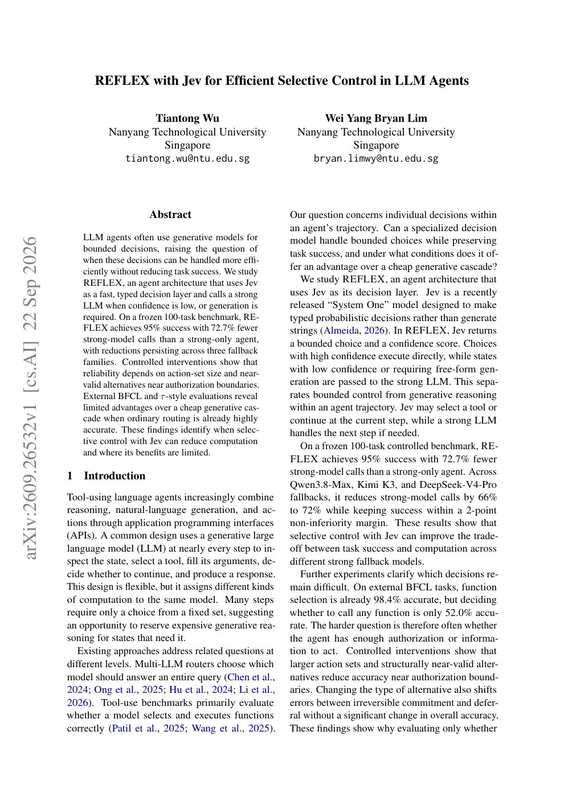
PDF page 2
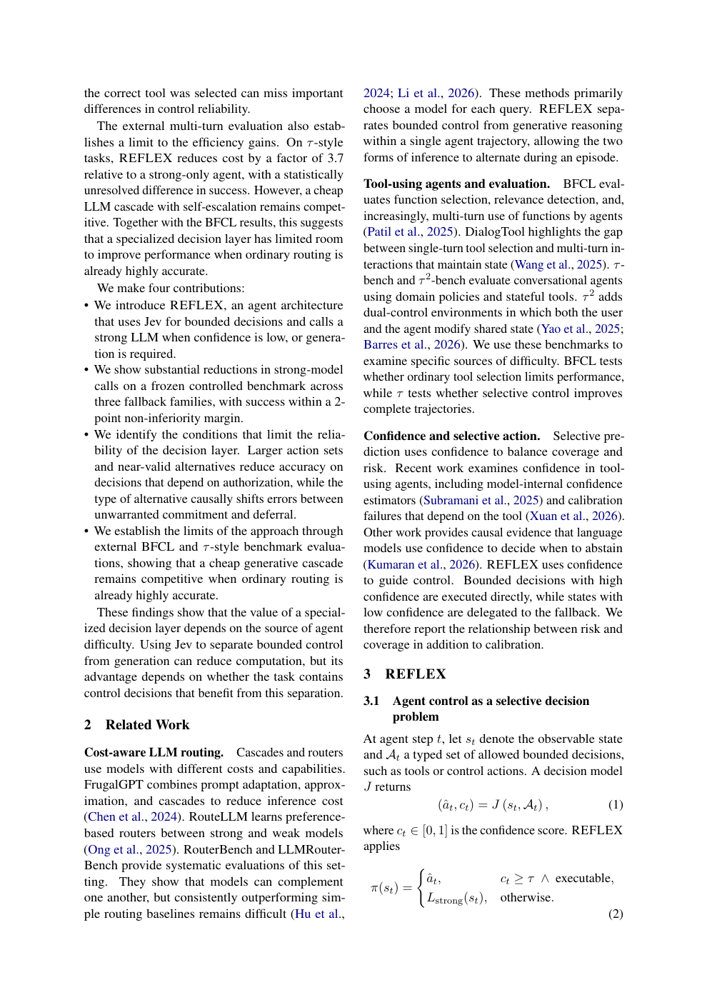
PDF page 3
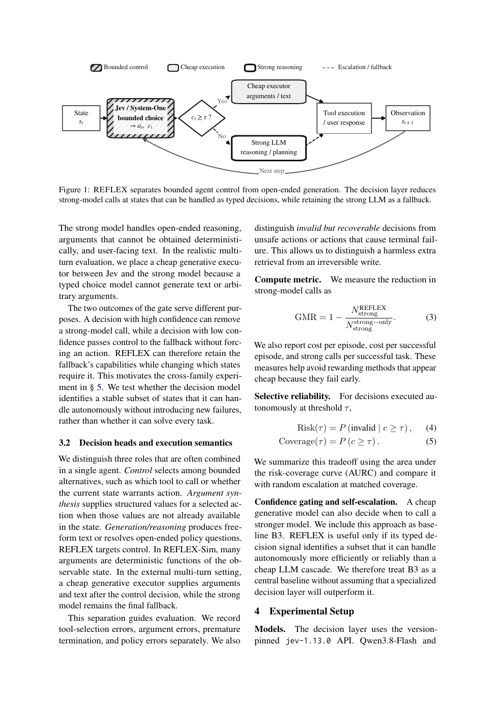
PDF page 4
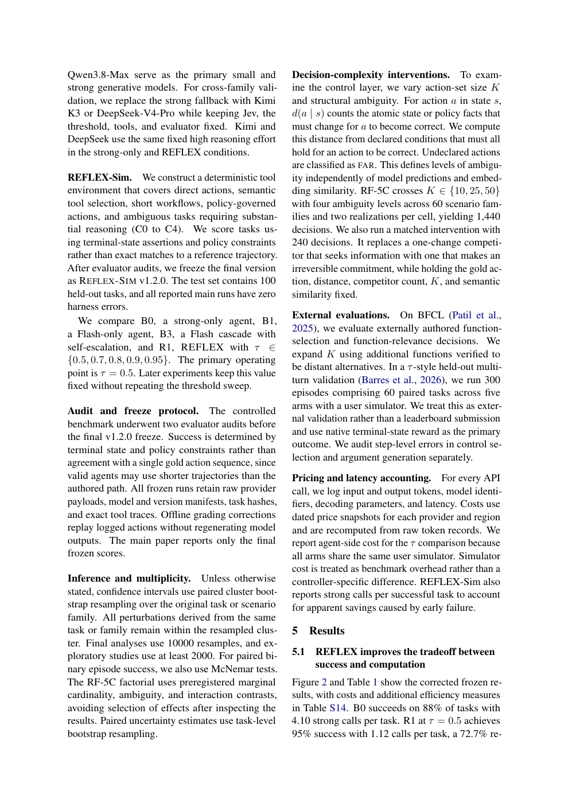
PDF page 6
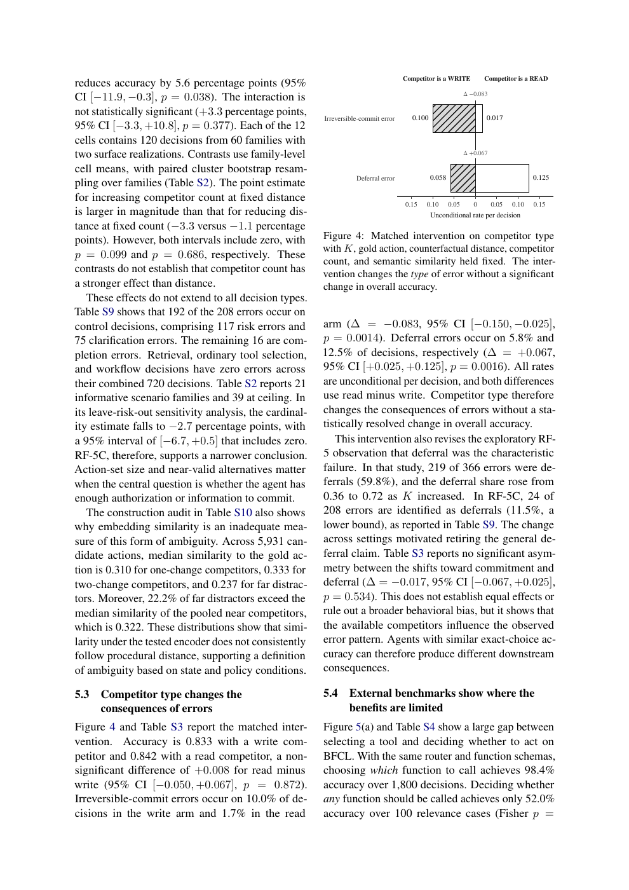
PDF page 8
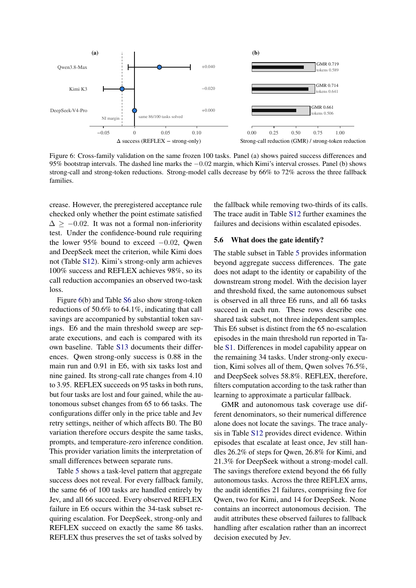
PDF page 10
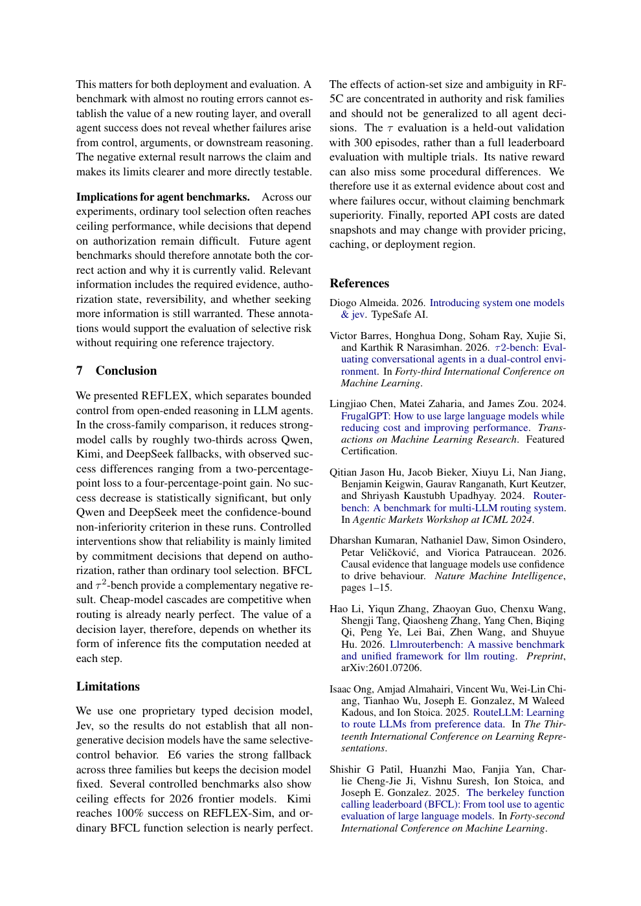
PDF page 11
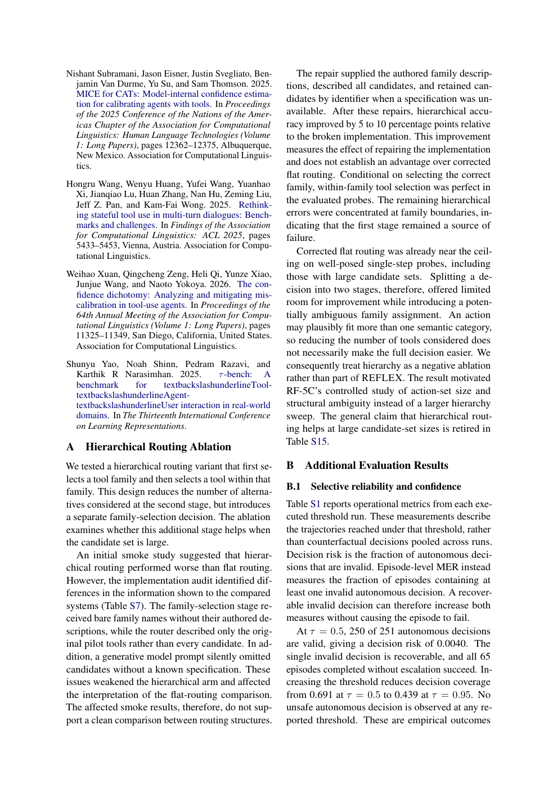
PDF page 12
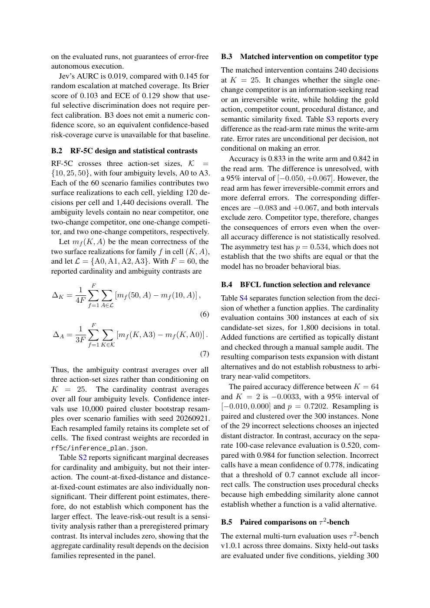
Full bibliographyکتابنامه کامل
Full bibliography transcribed from the source PDF. Original reference pages are the authority for formatting and extraction ambiguities; cited works were not independently analyzed just because they appear here.کتابنامه کامل از PDF منبع استخراج شده است. صفحه اصلی مرجع نگارش و ابهام استخراج است؛ درج منبع به معنی تحلیل مستقل آن اثر نیست.
Diogo Almeida. 2026. Introducing system one models & jev. TypeSafe AI. Victor Barres, Honghua Dong, Soham Ray, Xujie Si, and Karthik R Narasimhan. 2026. τ2-bench: Eval- uating conversational agents in a dual-control envi- ronment. InF orty-third International Conference on Machine Learning. Lingjiao Chen, Matei Zaharia, and James Zou. 2024. FrugalGPT: How to use large language models while reducing cost and improving performance.Trans- actions on Machine Learning Research. Featured Certification. Qitian Jason Hu, Jacob Bieker, Xiuyu Li, Nan Jiang, Benjamin Keigwin, Gaurav Ranganath, Kurt Keutzer, and Shriyash Kaustubh Upadhyay. 2024. Router- bench: A benchmark for multi-LLM routing system. InAgentic Markets Workshop at ICML 2024. Dharshan Kumaran, Nathaniel Daw, Simon Osindero, Petar Veli ˇckovi´c, and Viorica Patraucean. 2026. Causal evidence that language models use confidence to drive behaviour.Nature Machine Intelligence, pages 1–15. Hao Li, Yiqun Zhang, Zhaoyan Guo, Chenxu Wang, Shengji Tang, Qiaosheng Zhang, Yang Chen, Biqing Qi, Peng Ye, Lei Bai, Zhen Wang, and Shuyue Hu. 2026. Llmrouterbench: A massive benchmark and unified framework for llm routing.Preprint, arXiv:2601.07206. Isaac Ong, Amjad Almahairi, Vincent Wu, Wei-Lin Chi- ang, Tianhao Wu, Joseph E. Gonzalez, M Waleed Kadous, and Ion Stoica. 2025. RouteLLM: Learning to route LLMs from preference data. InThe Thir- teenth International Conference on Learning Repre- sentations. Shishir G Patil, Huanzhi Mao, Fanjia Yan, Char- lie Cheng-Jie Ji, Vishnu Suresh, Ion Stoica, and Joseph E. Gonzalez. 2025. The berkeley function calling leaderboard (BFCL): From tool use to agentic evaluation of large language models. InF orty-second International Conference on Machine Learning. Nishant Subramani, Jason Eisner, Justin Svegliato, Ben- jamin Van Durme, Yu Su, and Sam Thomson. 2025. MICE for CATs: Model-internal confidence estima- tion for calibrating agents with tools. InProceedings of the 2025 Conference of the Nations of the Amer- icas Chapter of the Association for Computational Linguistics: Human Language Technologies (V olume 1: Long Papers), pages 12362–12375, Albuquerque, New Mexico. Association for Computational Linguis- tics. Hongru Wang, Wenyu Huang, Yufei Wang, Yuanhao Xi, Jianqiao Lu, Huan Zhang, Nan Hu, Zeming Liu, Jeff Z. Pan, and Kam-Fai Wong. 2025. Rethink- ing stateful tool use in multi-turn dialogues: Bench- marks and challenges. InFindings of the Association for Computational Linguistics: ACL 2025, pages 5433–5453, Vienna, Austria. Association for Compu- tational Linguistics. Weihao Xuan, Qingcheng Zeng, Heli Qi, Yunze Xiao, Junjue Wang, and Naoto Yokoya. 2026. The con- fidence dichotomy: Analyzing and mitigating mis- calibration in tool-use agents. InProceedings of the 64th Annual Meeting of the Association for Compu- tational Linguistics (V olume 1: Long Papers), pages 11325–11349, San Diego, California, United States. Association for Computational Linguistics. Shunyu Yao, Noah Shinn, Pedram Razavi, and Karthik R Narasimhan. 2025. τ-bench: A benchmark for textbackslashunderlineTool- textbackslashunderlineAgent- textbackslashunderlineUser interaction in real-world domains. InThe Thirteenth International Conference on Learning Representations.